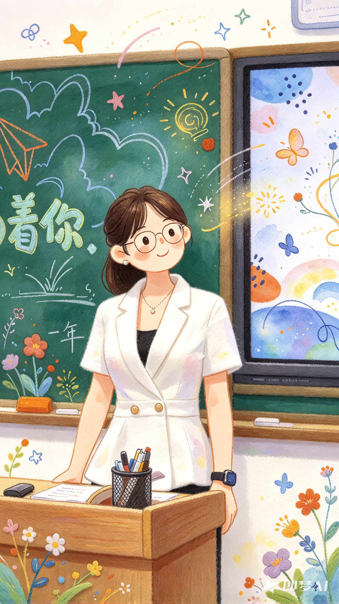
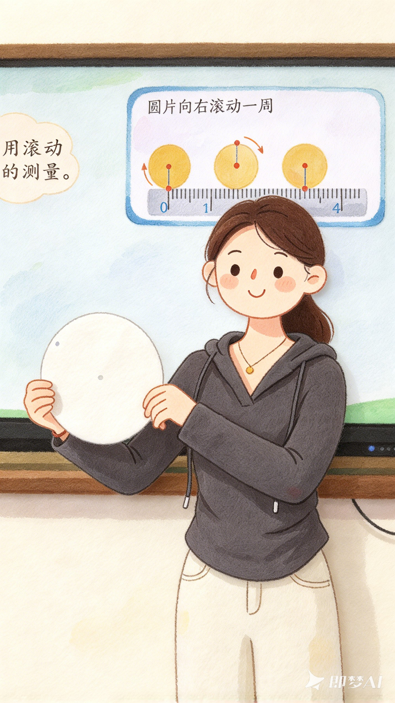
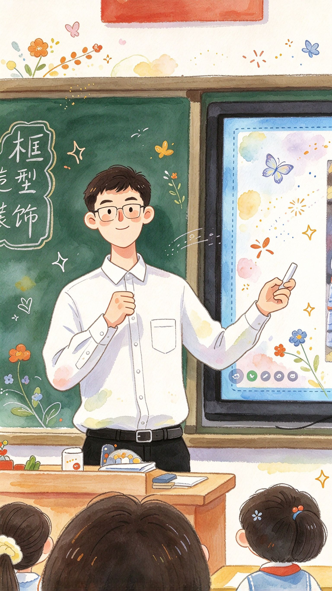

教师职场抉择 · 单人可玩
教师模拟器
一位教师的职业生涯
你刚从师范学校毕业，入职到这所重点学校，要在这所学校站满九个阶段、整整四十五年。想评职称、想当校长，还是只想守住讲台的底线？每一步选择都有代价——退休那天，才见分晓。
故事里的昵称·可改成你的名字。



九个阶段、反复权衡：你的每次选择，都会决定退休那天——是正高级、校长，还是被辞退的老师。
第 1 / 9 个阶段
— 点击文本快进 · 你的选择决定职场走向 —
结 局
学年结束 · 你的职场档案
教师手记
本阶段评价
点击图片，继续